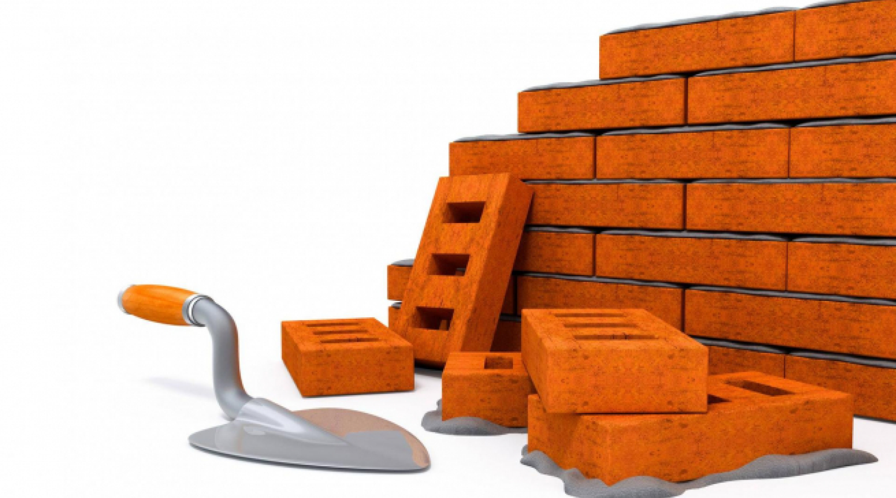

Для чего людям нужно строительство? Стройка домов нужна людям что бы люди жили в новых домах!
Строительство — создание (возведение) зданий, строений и сооружений[1].
В широком смысле к строительству (как отрасли) так же относят капитальный и текущий ремонт зданий и сооружений, а ещё их реконструкцию, реставрацию и реновацию.
Процесс строительства включает в себя все организационные, изыскательские, проектные, строительно-монтажные и пусконаладочные работы, связанные с созданием, изменением или сносом объекта, а также взаимодействие с компетентными органами по поводу производства таких работ.
Результатом строительства считается возведённое здание (сооружение) с внутренней отделкой, действующими инженерно-технологическими системами и полным комплектом документации, предусмотренным законом.